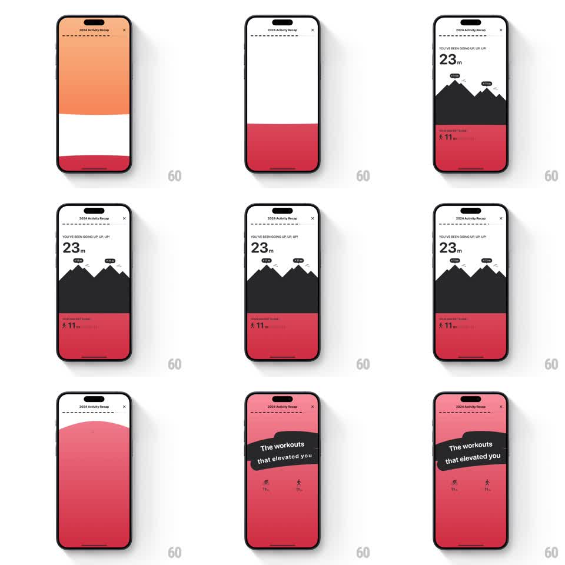

Media
Frame-by-frame

Rebuild this animation 1:1: Gentler Streak's elevation recap - layered mountains rise over a red band while the total ticks up, and a tilted sticker grid names the climbing workouts.

Rebuild this animation 1:1: Gentler Streak's elevation recap - layered mountains rise over a red band while the total ticks up, and a tilted sticker grid names the climbing workouts. ## Integration Integration: stack-agnostic spec - springs given as stiffness/damping, timed motions as duration + curve; map every value to your framework and animation library of choice. ## Scene White over red banded screen: "YOU'VE BEEN GOING UP, UP, UP!" kicker, a huge "23 m", a black mountain range illustration with small summit flags, and a red lower band "ELEVATION GAINED - 11 m". Second card: red screen with a tilted black sticker "The workouts that elevated you" over two activity icons with their meter counts. ## Motion spec Pattern: layered rise with sticker reveal, ~2.5s. - The bands slide in (orange-tinted white top, red bottom, 300ms each), the kicker and "23 m" fading up (300ms). - The mountain range builds peak by peak from left to right: each peak draws upward (250ms, ease-out, 100ms stagger), its summit flag popping last (scale 0 to 1, spring stiffness 420 damping 16). - The red band's stat line fades in as the last peak lands (250ms). - Transition: the red band floods upward to fill the screen (350ms, ease-in-out). - The black sticker whips in from the left at its tilt (spring stiffness 320 damping 15), then the two activity icons pop beneath it (scale 0.6 to 1, stiffness 380 damping 15, 80ms stagger) with their counts. ## Calibration - Peaks overlap - each new peak starts before the previous flag lands. - The sticker settles at about -4deg; level reads as a header bar. ## Reduced motion Elements fade in assembled. ## Don't miss - The tiny flags on the summits - they are what reads as "summited", not just hills. - The meter counts sit directly under their activity icons, not in a separate list.